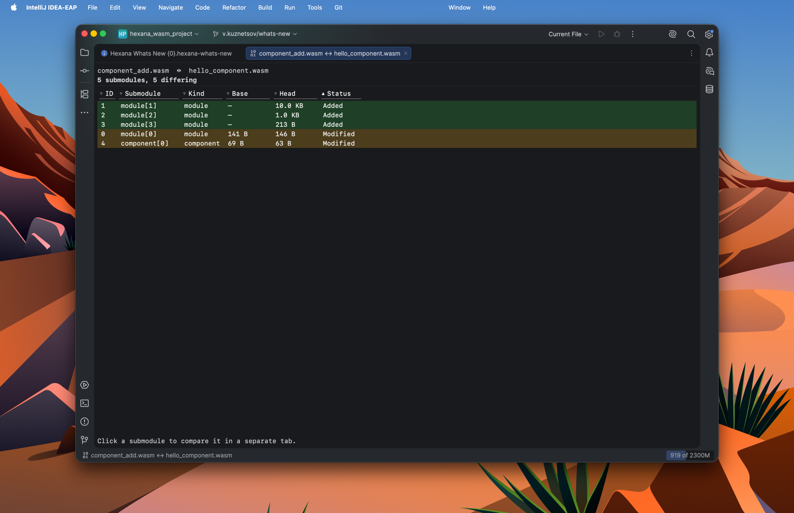

Hexana update
What's New in Hexana 0.12
Hexana 0.12 focuses on WASM and Archives while refining binary inspection inside JetBrains IDEs.
WASM
Compare and inspect Component Model binaries
Component Model binaries now get recursive comparison, virtualized WAT for embedded core modules, and complete nested size attribution.
- Compare WASM With… now accepts Component Model binaries, not only core modules. Comparing two components opens a submodule view that lists each component's embedded submodules (core modules and nested components, found recursively), flags which differ.
- Component Model binaries gain a WAT (virtualized) tab. A component's code lives in its embedded core modules, so the tab discovers every embedded core module — recursively, through nested sub-components.
- The Top size-profiler tab now breaks a Component Model binary down completely: every nested sub-component and embedded core module is attributed with its correct size and expands to its internal sections and functions, recursively and on demand. Previously a composed component — whose code sits inside nested sub-components — reported most of its bytes as a single opaque block.
- Size-profiler (Top) tree nodes expand again. Nodes whose children are generated lazily — now any nested component / embedded core module, and a core module's sections expanding into their functions.

Archives
Inspect static libraries and object members
Unix ar archives and COFF import libraries open as member lists, with object files extracted into the native disassembly views.
- Static-library archives open for inspection:
.a(Unixar, with ELF or Mach-O members) and.lib(Windows COFF import libraries). The archive opens to a Members list showing each object file's name, its detected format (ELF / Mach-O / PE / COFF / short-import), and size. - Object-file members of a static-library archive disassemble per function in the virtualized (Capstone) view. Relocatable objects — ELF (
.o), Windows COFF (.obj/.o), and Mach-O — lay out their function symbols section-relative rather than at virtual addresses.

Also in 0.12
- Copy, inspect, and navigate imports and exports faster Imports and Exports rows now expose full names, copy actions, WAT navigation, and usage discovery for function imports.
- More binary formats and cleaner IDE entry points Hexana adds DEX and ZIP64 coverage, groups IDE actions under a Hexana submenu, and improves Node.js debugging stability.